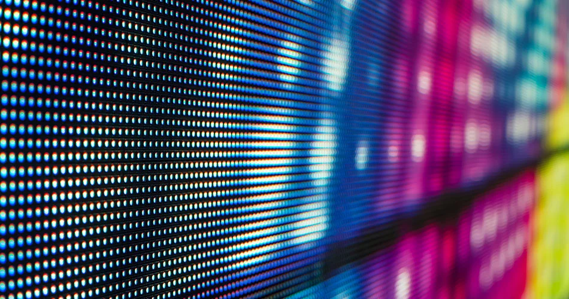

A LED display is a flat panel display that uses an array of light-emitting diodes as pixels for a video display. Their brightness allows them to be used outdoors where they are visible in the sun for store signs and billboards. In recent years, they have also become commonly used in destination signs on public transport vehicles, as well as variable-message signs on highways. LED displays are capable of providing general illumination in addition to visual display, as when used for stage lighting or other decorative (as opposed to informational) purposes. LED displays can offer higher contrast ratios than a projector and are thus an alternative to traditional projection screens, and they can be used for large, uninterrupted (without a visible grid arising from the bezels of individual displays) video walls. microLED displays are LED displays with smaller LEDs, which poses significant development challenges.
